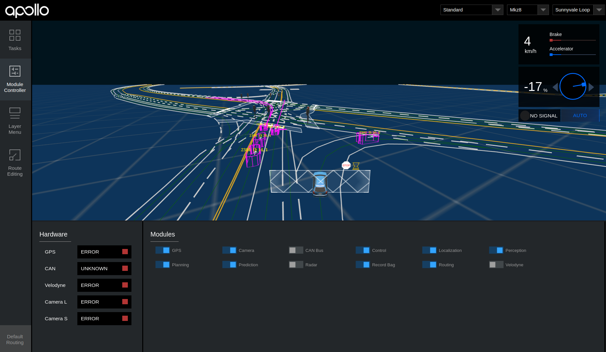

Run Offline Demo
Apollo provides a method to run simulation if you do not have the required hardware.
First fork and then clone Apollo's GitHub code and then set up the docker release environment by following the instructions in the Install docker section of the Build and Release page.
Setup steps:
-
Start the docker release environment using the command:
bash docker/scripts/dev_start.sh -
Enter the docker release environment:
bash docker/scripts/dev_into.sh -
Build Apollo in the Container:
bash apollo.sh buildNote:If you do not have a GPU, you can use the following script insteadbash apollo.sh build_cpu -
Bootstrap to start ros call and Monitor module and Dreamview
bash scripts/bootstrap.sh -
Download demo record:
cd docs/demo_guide/ python rosbag_helper.py demo_3.5.record -
Now you can play the record:
cyber_recorder play -f docs/demo_guide/demo_3.5.record --loopThe
--loopoption enables record to keep playing the bag in a loop playback mode. -
Open Chrome and go to localhost:8888 to access Apollo Dreamview, which opens the screen below.  The car in Dreamview is happy to move around!
Congratulations!